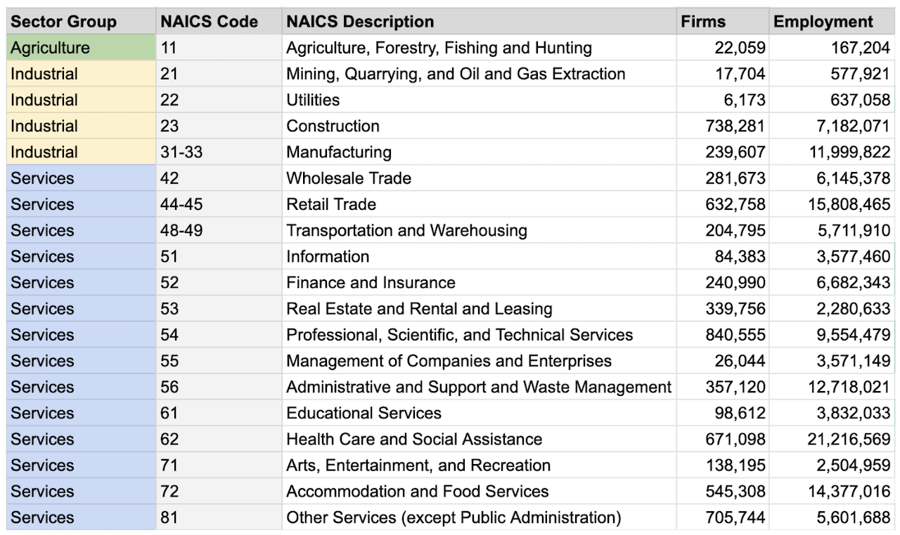

Structural Transformation
Information processing is not the same for every industry segment.
To build any information processing strategy we need to understand not only our organization information needs with respect to the size of the company --- but also the specific needs our industry segment has with respect to processing information. The purpose of this article in the series is to provide background and context on how different industries evolved to put more emphasis on information processing and knowledge work. The quote below by Klaus Schwab describes how he sees the effects of the different phases of the industrial revolution.
The first industrial revolution, powered by the steam engine, changed the world by replacing muscle power with mechanical power. In the second one, electricity and the assembly line made mass production possible. The third one was powered by digital computing and the internet, and it created automated production and the connected world we are living in now.
(Editors note: if you want to skip the "compelling history lesson", jump on to the next article on "What is Knowledge Work?")
Over the past century, the economic makeup of industrialized countries has undergone profound transformations, mirroring the evolutionary pressures that shape living organisms. Economies, like companies and species, face constant competition and must adapt to survive. Growth is the mechanism that ensures this survival, offering advantages such as economies of scale, market dominance, and the capacity for innovation.
This change in economic makeup is known as "structural transformation". It involves the movement of economic activity and jobs from one major sector to another —- such as from agriculture to manufacturing, and then to services and knowledge-based industries.
This transformation is driven by factors like technological advancements, productivity improvements, and changing consumer demands. For example, as farming became more efficient due to mechanization, fewer workers were needed in agriculture, leading to growth in manufacturing. Later, as automation and globalization increased industrial efficiency, economies shifted towards services and knowledge-based work, like finance, healthcare, and technology.
In short, structural transformation is how economies evolve, reallocating resources and labor to more productive sectors over time.
From Farm, to Factory, to Services
Structural transformation refers to the shift of economic activity, labor, and resources from low-productivity sectors (such as agriculture) to higher-productivity sectors (like manufacturing and services) over time. This process is a hallmark of economic development. In the chart below you can see how gross domestic product shifted in the United States from 1839 t0 2016.
Over the past 200 years, the global economy has undergone profound structural transformations, driven by technological progress and shifts in productivity across sectors. In the early 1800s, the majority of workers were engaged in agriculture, a labor-intensive field requiring significant manpower to sustain basic needs.
Advances in agricultural technology, such as the horse-drawn harvester and later the tractor, radically improved productivity, freeing vast numbers of workers from farm labor. This exodus from agriculture marked the beginning of industrialization, as these newly available workers were absorbed into the growing manufacturing sector, which offered higher wages and demanded greater skill.
A reasonable hypothesis is that technological progress reduced the need for unskilled labor in agriculture and manufacturing. Take agriculture, for example, where the late nineteenth and early twentieth centuries saw massive improvements in agricultural technology. Two of the most important inventions were the horse-drawn harvester in the mid-nineteenth century and the tractor that began to diffuse into American farms in the early twentieth century. Mechanization of farms virtually eliminated the need for raw labor: In 1830, it would take a farmer 250–300 hours to produce 100 bushels of wheat; in 1890, 40–50 hours with the help of a horse-drawn machine; in 1930, 15–20 hours with a tractor; and in 1975, 3–4 hours with large tractors and combines.
The rise of manufacturing reshaped economies during the 19th and early 20th centuries, fueled by innovations like the steam engine and electricity. Factories became the epicenter of economic activity, producing goods at unprecedented scales and transforming rural economies into urban industrial hubs. This shift was accompanied by rapid increases in productivity and real wages, contributing to rising living standards.
It is easy to understand how the emergence of Watt's steam engine, Crompton's cotton spinning mule, and Cort's puddling and rolling process for iron transformed the industrial landscape during the 1800s. Likewise, it is easy to appreciate how the introduction of electricity, petrochemicals and the internal combustion engine changed manufacturing in the 1900s.
However, as manufacturing matured and technological advancements continued, the demand for labor in factories began to decline. Manufacturing employment peaked around 1979 and has been on a declining trend since. In 1970, manufacturing jobs constituted a significant share of U.S. employment. By 2022, the sector employed about 12.9 million people, representing approximately 7.7% of total employment.
Workforce size in U.S. companies has shifted dramatically since 1970, reflecting broader economic trends. While traditional industries like manufacturing have downsized, service sectors and tech firms have grown. Automation and globalization have fundamentally changed how companies scale their workforces, favoring efficiency and lean operations over large employee bases.
Automation, improved efficiency, and global competition meant that fewer workers were needed to produce the same output, paving the way for the next wave of economic evolution: the services sector. This trend is on display in the chart below showing "employment by sector" over the last 150 years.
By the mid-20th century, services began to outpace manufacturing as the dominant economic force, driven by technology and globalization. By 2022, service-providing industries employed over 135 million people, making up more than 80% of total employment.
The services sector[2] encompasses a range of industries that are categorized within the North American Industry Classification System (NAICS). Below are the primary NAICS sectors involved in services:
Structural evolution also brought profound changes to workforce dynamics. Companies discovered they could achieve more with fewer employees, leveraging technology to boost productivity and revenue. Compelling examples include:
- General Motors, once employing over 850,000 people, has downsized to about 160,000, largely due to automation and offshoring.
- In contrast, modern tech companies like Google (Alphabet) achieve high revenues with workforces that are a fraction of their industrial predecessors.
Such efficiency reflects a broader trend where service-based companies use technology to coordinate vast operations, scale quickly, and deliver significant value with lean teams.
Put more directly: technology allowed certain service segments of the economy to "do more with the same (or less) number of resources".
Technology as the Catalyst of Structural Transformation
The ability to harness software and technology not only redefined efficiency but also dictated which companies thrived. Giants like Netflix and Amazon have leveraged technology to achieve exponential growth, leaving behind competitors that failed to adapt, such as Blockbuster and Borders.
Humankind's use of early tools, such as writing on papyrus scrolls to record and process information, reflects a timeless pursuit of efficiency and innovation.
Ever since the time of papyrus scrolls we've been using technology to improve our efficiency and productivity to be more competitive in our economic sector. In the age of data platforms, telecommunications, and artificial intelligence, nothing has changed if you look at it from the broad lens of structural transformation. Everything that is happening now has been happening for thousands of years with respect to technology changing the economic landscape. A great example of this is the advertisement from IBM below from the 1980s.
I argue that the same thing holds true today when we discuss large language models, data platforms, and artificial intelligence; We're continuing to move as fast as we can to stay in the same place, the "table stakes" just keep changing as our technology changes.
These modern tools automate and accelerate information processing ("transformation"), enabling us to achieve unprecedented levels of productivity and creativity, continuing the age-old tradition of leveraging tools to enhance human capability.
So if we summarize what we learned about structural transformation in this article, you might make the connection that:
- Agriculture transforms land and seeds into crops
- Manufacturing transforms raw materials into processed goods
- Services sectors transform data/information into information that achieves a goal or captures revenue
So what is happening in the services sector around information transformation that is so critical to their business growth?
Services sectors use "knowledge work" to process information that gives their organization an advantage over other competitors that do not use technology as effectively as they do. In the next article we define the term "knowledge work" and how it supports the ideas of a technology investment strategy.